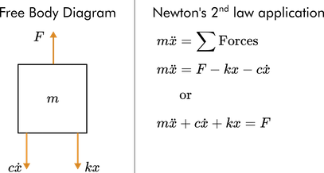
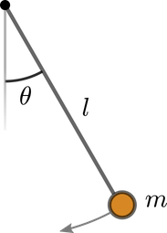

Unit 2.1 Laplace transforms and LTI systems#
Learning Outcomes#
In this unit, students will…
Compute Laplace transforms by hand and using symbolic math.
Describe the properties of the Laplace transform.
Apply Laplace transforms to solve initial value problems.
Recall the definition of a linear time-invariant (LTI) operator.
Note
This unit is based on the MATLAB LiveScript ConceptReview.mlx from the curriculum module Transfer Function Analysis of Dynamic Systems.
Some of the examples rely on interactive features of MATLAB that are not readily reproduced in these notes. To make use of these facilities, you are advised to access the script directly from the project in MATLAB online.
These materials © Copyright 2023 The MathWorks™, Inc. (See MathWorks License).
%% Lecturer: set up the TransferFunctions project for in class execution of exercise tests and activities.
% Setup MATLAB to use the ConceptReview.mlx LiveScript in class.
% I am assuming that this is on the MATLAB Drive
format compact; setappdata(0, "MKernel_plot_format", 'svg')
% Change this to local set up where this Jupyter book is run
cd '/Users/eechris/MATLAB-Drive/Repositories/Transfer-Function-Analysis-of-Dynamic-Systems'
open('TransferFunctions.prj')
Introduction#
Transfer functions are derived by computing the Laplace transform of linear time-invariant (LTI) dynamic systems. In these notes, the basics of Laplace transforms and LTI systems are reviewed.
The Laplace Transform#
Definition#
The Laplace transform of a locally integrable function \(f\) is
The corresponding inverse Laplace transform is denoted as
Inverse Laplace transforms (and forward Laplace transforms, for that matter) are usually found by appealing to a transform table. The formal definition of the inverse Laplace transform is rarely used and so is not discussed here.
Example 1#

(a) Compute the Laplace transform of \(f(t) = u_0(t - a)\) by hand, where \(u_o(t)\) is the Heaviside step function with \(a > 0\).
(b) Compute the analytic Laplace transform of \(f\) using the Symbolic Math Toolbox.
Solution#
(a)
(b) The laplace function computes the analytic transform of a symbolic expression \(f\). You can use the syntax:
Fs = laplace(f,var,transformVar)
Start by declaring symbolic variables
format compact; setappdata(0, "MKernel_plot_format", 'svg') % use less white space in outputs
syms t s
syms a positive
Then, define the function \(f\). You can find a list of mathematical functions present in the Symbolic Math Toolbox in the documentation.
f = heaviside(t - a)
f =
heaviside(t - a)
Finally, compute the Laplace transform with the input variable
tand transform variables.
Fs = laplace(f, t, s)
Fs =
exp(-a*s)/s
Exercise 1#
Compute the Laplace transform of some standard functions listed below on paper[1]. Assume \(a\) is real and \(a > 0\)
a. \(f(t) = 1\) b. \(f(t) = e^{-at}\) c. \(f(t) = t\) d. \(f(t) = \delta(t - a)\)
e. \(f(t) = \cos(t)\) f. \(f(t) = t^2 e^{-at}\) g. \(f(t) = e^{-at}\sin(t)\)
Hints: a/b. substitution, c. integration by parts, d. dirac for the symbolic computation), e/g integrate by parts and rearrange terms, f. multiple integration by parts.
Verify your answers by computing the Laplace transforms in the space provided below using symbolic math.
% Symbolic variable declarations
syms t s
syms a positive
Solution 1 (a).#
f = 1
Fs = laplace(f,t,s)
f =
1
Fs =
1/s
Solution 1 (b).#
f = exp(-a*t)
Fs = laplace(exp(-a*t))
f =
exp(-a*t)
Fs =
1/(a + s)
Solution 1 (c).#
f = t
Fs = laplace(f, t, s)
f =
t
Fs =
1/s^2
Solution 1 (d).#
f = dirac(t - a)
Fs = laplace(f, t, s)
f =
dirac(a - t)
Fs =
exp(-a*s)
Solution 1 (e).#
f = cos(t)
Fs = laplace(f, t, s)
f =
cos(t)
Fs =
s/(s^2 + 1)
Solution 1 (f).#
f = t^2 * exp(-a*t)
Fs = laplace(f, t, s)
f =
t^2*exp(-a*t)
Fs =
2/(a + s)^3
Solution 1 (g).#
f = exp(-a*t) * sin(t)
Fs = laplace(f, t, s)
f =
exp(-a*t)*sin(t)
Fs =
1/((a + s)^2 + 1)
Visualize Laplace transforms#

See the MATLAB LiveScript ConceptReview.mlx.
open('ConceptReview.mlx')
Reflect#

What class of functions is most commonly observed in the Laplace transform?
How do the poles of the Laplace transform reflect the behavior of the time domain function \(f(t)\)?
Laplace transforms and their inverses are also commonly found using a table, like this one.
See also Common Laplace Transform Pairs in this textbook.
Laplace transform properties#
Laplace transforms have several important properties that can be derived from the definition. A few essential properties are reviewed below.
A more complete list of Laplace transform properties is to be found in Laplace Transform Properties in this textbook.
For example, the Laplace transform of a time derivative can be computed through integration by parts:
Try this#
The symbolic derivative of \(f\) is defined below by declaring a symbolic function using the syntax
syms f(t)
The derivative is then computed using the diff function.
syms t f(t)
dfdt = diff(f)
dfdt(t) =
diff(f(t), t)
Use the laplace function to compute the Laplace transform of dfdt in the space below.
Fs = laplace(dfdt)
Fs =
s*laplace(f(t), t, s) - f(0)
Exercise 2#
2 (a).#
Find the formula for the Laplace transform of the second time derivative \(\ddot{f}(t)\) by hand[1].
2(b).#
Verify your answer by computing the Laplace transform using symbolic math.
Pro-tip:#

To compute the second derivative, use the diff function with the syntax: diff(f,n), where n is the order of the derivative.
Solution 2(b)#
syms t f(t) % Definitions of the symbolic variables
% Perform your symbolic computations here
d2fdt2 = diff(f,2)
d2fdt2(t) =
diff(f(t), t, t)
Fs = laplace(d2fdt2)
Fs =
s^2*laplace(f(t), t, s) - subs(diff(f(t), t), t, 0) - s*f(0)
Visualize Laplace transform properties#
See the MATLAB LiveScript ConceptReview.mlx
Solving differential equations using the Laplace transform#
You can solve initial value problems analytically using Laplace transforms. In general, this is accomplished by:
taking the Laplace transform,
solving for the solution variable in the Laplace domain (\(X(s)\)), and
taking the inverse Laplace transform by referring to a Laplace transform table.
Example 3#
Use the Laplace transform to solve for the dynamics of the mass-spring-damper with
constant forcing \(F = 10\) N
physical parameters: \(m = 1\) kg, \(c = 2\) Ns/m, and \(k = 10\) N/m
zero initial conditions: \(x(0) = 0\) and \(x'(0) = 0\)

Solution#
1. Derive the equations of motion.#
You can draw a free body diagram and apply Newton’s second law to derive the equations of motion.

2. Compute the Laplace transform of the dynamic system ODE and solve for \(X\)#
Note \(\mathcal{L}\{x(t)\} = X(s)\)
Applying the zero initial conditions and the values of the physical parameters implies
Solving for yields
3. Use partial fraction decomposition to separate the expression for \(X(s)\) into terms where the inverse Laplace transform \(X\) is known#
Try performing the partial fraction decomposition on paper and comparing your result to the symbolic solution found below.
% Define X(s)
syms s
X = 10/(s^3 + 2*s^2 + 10*s)
X =
10/(s^3 + 2*s^2 + 10*s)
% Compute the partial fraction decomposition
Xdecomp = partfrac(X,s)
Xdecomp =
1/s - (s + 2)/(s^2 + 2*s + 10)
4. Take the inverse Laplace transform#
You can take the inverse Laplace transform by rewriting as a sum of terms in forms found on a transform table.
The solution is then constructed by taking the inverse transform:
Alternatively, you can use the symbolic function ilaplace to find the inverse Laplace transform of \(X(s)\).
syms x
x = ilaplace(Xdecomp)
x =
1 - exp(-t)*(cos(3*t) + sin(3*t)/3)
5. Plot the solution#
% Create solution array
t = linspace(0,5,150);
x = 1-exp(-t).*(cos(3*t) + sin(3*t)/3);
plot(t, x)
There is an animated version of the solution to this spring-mass-damper system in the MATLAB LiveScript ConceptReview.mlx.
open('ConceptReview.mlx')
Exercise 4#
In this exercise, you will solve for the dynamics of the simple pendulum using the Laplace transform.

4(a)#
Draw a free-body diagram for the simple pendulum shown above and derive the equation of motion for a pendulum with length \(l = 0.5\) m and a gravitational constant of 9.8 m/s. Linearize the equation near \(\theta = 0\) and show that it is equivalent to
4(b)#
Use the Laplace transform to solve the linearized equations of motion:
with initial conditions \(\theta(0) = \pi/6\), \(\dot{\theta}(0) = 0\).
Write your solution in the variable theta in terms of the symbolic variable t. Then click the checkbox to plot your solution.
syms t s
% Replace NaN with your symbolic solution and run the section
Theta = (pi/6)*s/(s^2 + 19.6);
theta = ilaplace(Theta)
theta =
(pi*cos((7*2^(1/2)*5^(1/2)*t)/5))/6
There is an animated version of the solution to this simple pendulum system in the MATLAB LiveScript ConceptReview.mlx. Open the LiveScript file and paste your solution into the appropriate place to see the animation.
open('ConceptReview.mlx')
Linear Time-invariant Systems#
Linear time-invariant (LTI) systems are characterized by the two properties stated in the name: linearity and time-invariance.
Consider an operator \(g\) that maps an input \(u(t)\) to an output \(y(t)\).
1. Linearity#
The operator \(g\) is linear if it has two properties:
Superposition: \(g[u_1(t) + u_2(t)]\) = \(y_1(t)\) + \(y_2(t)\)
Homogeneity: \(g[au(t)] = ay(t)\)
Often these two properties are written together as
2. Time invariance#
The operator \(g\) is time-invariant if a time-shifted input produces an output with the same time shift:
Exercise 5.#
Consider the simple operators listed below. Which operators are linear? Which are time-invariant?
Use the interactive tool in the MATLAB LiveScript ConceptReview.mlx to explore these and reflect on the results.
\(g\): \(y(t) = g[u(t)]\) with \(g = \frac{d}{dt} + \frac{d^2}{dt^2}\)
\(h\): \(y(t) = 4\sin^2[u(t)]\)
\(i\): \(y(t) = \int_{t - 1}^{t + 1} 3u(\tau) d\tau\)
\(j\): \(y(t) = t \frac{d}{dt} u(t)\)
open('ConceptReview.mlx')
Homework 1: Laplace Transform and LTI Systems#
Register with the MathWorks (if you haven’t already) using your Swansea University email and install your own copy of the curriculum module Transfer Function Analysis of Dynamic Systems into the online MATLAB version[2].
Open the
ConceptsReview.mlxactivity.Complete the Exercises and Activities and add your own notes to the LiveScript file in response to the Reflection prompts given above.
Solutions to Selected Exercises#
Solution to Exercise 1#
We have made use of the resource Laplace Transforms from the HELM project [University, 2008, University, 2008] hosted at Loughborough University. We have made the HELM resource available in the Canvas site for this module.
Compute the Laplace transform of some standard functions listed below:
a. \(f(t) = 1\)
Note
We have given all the steps here: in the remaining exercises we will omit some of the details but the results would be much the same. We will also demonstrate pragmatism by using the provided Laplace transform properties and transform tables (Laplace Transform Properties, Common Laplace Transform Pairs) when they simplify the analysis. This is generally the approach you should take too.
b. \(f(t) = e^{-at}\)
c. \(f(t) = t\)
Using integration by parts
Now we have the difficulty of substituting in the limits of integration. The only problem arises with the upper limit (\(t = \infty\)). We shall always assume that the parameter \(s\) is so chosen that no contribution ever arises from the upper limit (\(t = \infty\)). In this particular case we need only demand that \(s\) is real and positive. Using this ‘rule of thumb’:
d. \(f(t) = \delta(t - a)\)
The solution uses the sampling property \(f(t)\delta(t-a) = f(a)\delta(t-a)\) and the sifting property
(see Important Properties of the Delta Function in [Jobling, 2024]).
e. \(f(t) = \cos(t)\)
Using the identity
and applying the result of (b)
f. \(f(t) = t^2 e^{-at}\)
From transform tables (e.g. Common Laplace Transform Pairs)
From the frequency shift property (see Laplace transform properties)
so
g. \(f(t) = e^{-at}\sin(t)\)
To complete this from first principles you can use the approach we used to solve (e). If you want to do this you should note that
It is easy to show that
An in this case \(\omega = 1\) so
By the frequency shift property (see previous solution)
References for this Unit#
Christopher P. Jobling. EG-150: Signals and Systems. Swansea University, 2024. URL: https://cpjobling.github.io/eg-150-textbook.
Loughborough University. Helping engineers learn mathematics workbooks (helm). 2008. URL: https://www.lboro.ac.uk/departments/mlsc/student-resources/helm-workbooks/ (visited on 2024-08-02).
Loughborough University. Laplace transforms (helm). 2008. URL: https://www.lboro.ac.uk/media/media/schoolanddepartments/mlsc/downloads/HELM%20Workbook%2020%20Laplace%20Transforms.pdf (visited on 2024-08-02).